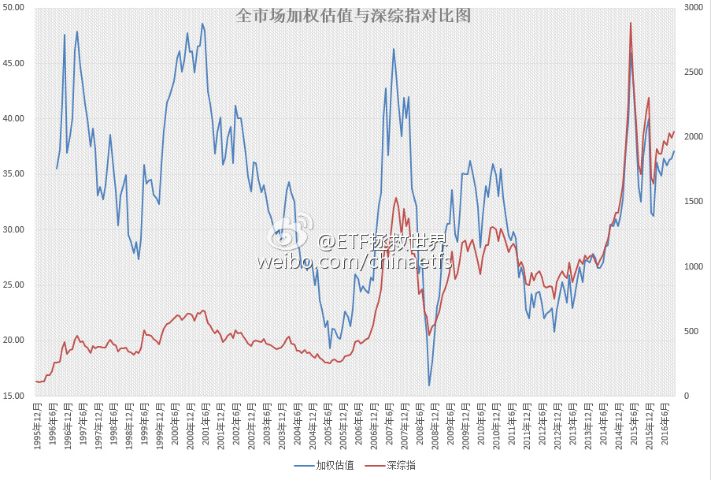

昨天收盘后，综合外部宏观数据加权的A股全市场估值图。
月末计算首次突破37。有心的朋友应该记得，40（去年12月底）就是危险区域，45（去年5、6月；2007年10月；1997、2001）不跑会被打的亲妈都不认识。
这个位置，比五年平均高26%，比十年平均高21%。处在过去五年最贵的86.6%，过去十年最贵的84.1%。
有人因为上涨欢欣雀跃，而我感到奇怪的是，难道不应该是下跌才应该高兴，能买到便宜货，买到便宜货，长期来看收益才会高吗？
如果是因为满仓，因为上涨感到高兴，看看全市场估值图，能涨个15%，20%？这点收益相比下跌可能带来的损失，值得满仓？
如果真的敢涨20%（全市场类指数），我坚信股灾又会以一种新的形式出现在大家面前。
月末计算首次突破37。有心的朋友应该记得，40（去年12月底）就是危险区域，45（去年5、6月；2007年10月；1997、2001）不跑会被打的亲妈都不认识。
这个位置，比五年平均高26%，比十年平均高21%。处在过去五年最贵的86.6%，过去十年最贵的84.1%。
有人因为上涨欢欣雀跃，而我感到奇怪的是，难道不应该是下跌才应该高兴，能买到便宜货，买到便宜货，长期来看收益才会高吗？
如果是因为满仓，因为上涨感到高兴，看看全市场估值图，能涨个15%，20%？这点收益相比下跌可能带来的损失，值得满仓？
如果真的敢涨20%（全市场类指数），我坚信股灾又会以一种新的形式出现在大家面前。
- 